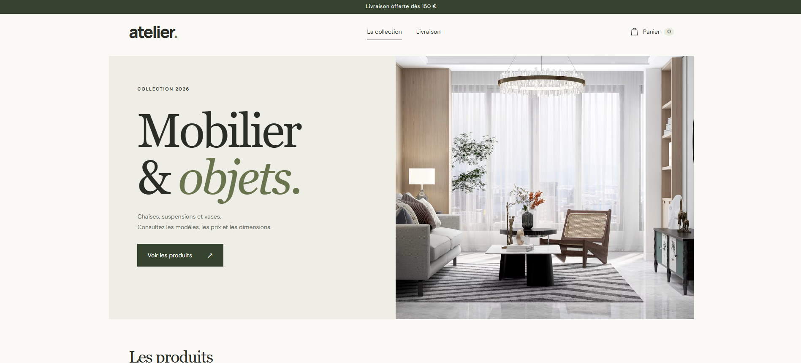
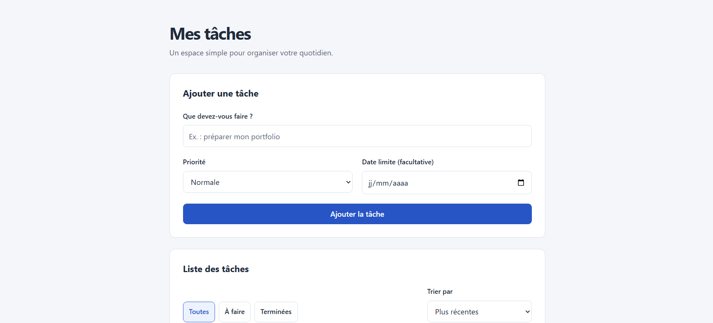
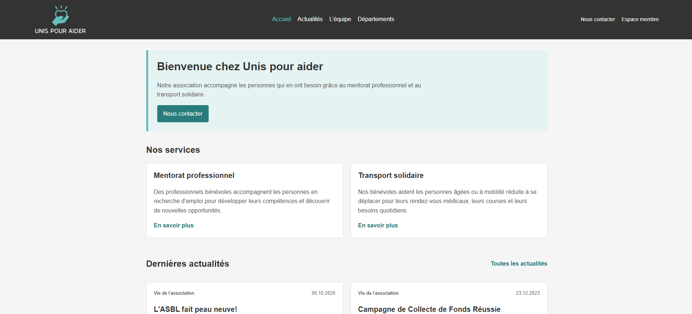

Des idées.
De la logique. Du code.
Une sélection de mes projets web : PHP côté serveur, JavaScript dans le navigateur et des parcours concrets à explorer dans les dépôts.

WebShop
Une boutique fictive avec catalogue filtrable, panier en session PHP et commande simulée. Calcul des prix côté serveur et protection anti injections SQL.

To-do List
Gestion de tâches avec modification, priorités, dates limites, tri et filtres. Les données sont sauvegardées dans le navigateur grâce à localStorage.

Unis pour aider
Mon premier et plus gros projet web. Réalisé dans le cadre de mon cours de Développement web à l'HELMo.
Mes racines en jeu vidéo.
Des projets Unity et C# qui font aussi partie de mon parcours de programmation.
Un projet commence
par une conversation.
Envie de parler développement web, de découvrir mon travail ou de me proposer une collaboration ? Retrouvons-nous sur LinkedIn.